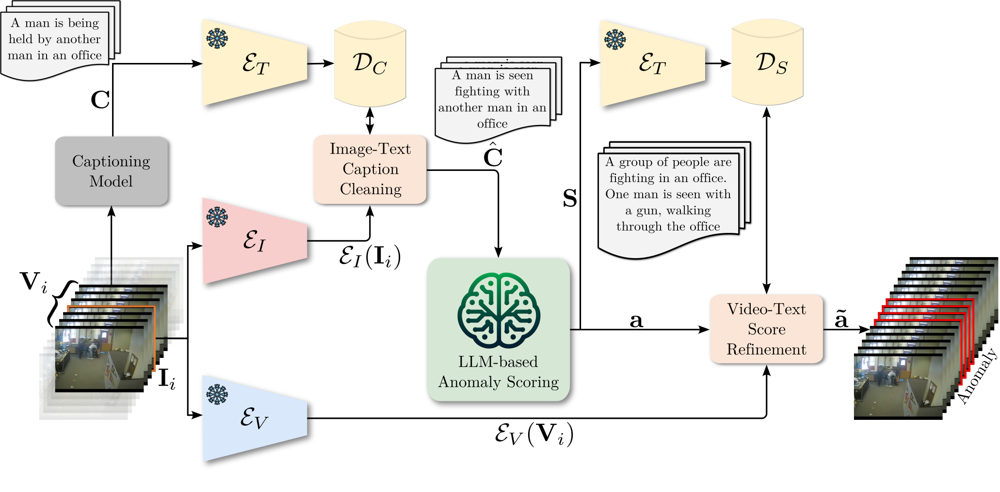

Abstract
Video anomaly detection (VAD) aims to temporally locate abnormal events in a video. Existing works mostly rely on training deep models to learn the distribution of normality with either video-level supervision, one-class supervision, or in an unsupervised setting. Training-based methods are prone to be domain-specific, thus being costly for practical deployment as any domain change will involve data collection and model training. In this paper, we radically depart from previous efforts and propose LAnguage-based VAD (LAVAD), a method tackling VAD in a novel, training-free paradigm, exploiting the capabilities of pre-trained Large Language Models (LLMs) and existing Vision-Language Models (VLMs). We leverage VLM-based captioning models to generate textual descriptions for each frame of any test video. With the textual scene description, we then devise a prompting mechanism to unlock the capability of LLMs in terms of temporal aggregation and anomaly score estimation, turning LLMs into an effective video anomaly detector. We further leverage modality-aligned VLMs and propose effective techniques based on cross-modal similarity for cleaning noisy captions and refining the LLM-based anomaly scores. We evaluate LAVAD on two large datasets featuring real-world surveillance scenarios (UCF-Crime and XD-Violence), showing that it outperforms both unsupervised and one-class methods without requiring any training or data collection.

Method Overview
The architecture of our proposed LAVAD for addressing training-free VAD. For each test video \(\mathbf{V}\), we first employ a captioning model to generate a caption \(C_i\) for each frame \(\mathbf{I}_i \in \mathbf{V}\), forming a caption sequence \(\mathbf{C}\). Our Image-Text Caption Cleaning component addresses noisy and incorrect raw captions based on cross-modal similarity. We replace the raw caption with a caption \(\hat{C}_i \in \mathbf{C} \) whose textual embedding \( \mathcal{E}_T(\hat{C}_i) \) is most aligned to the image embedding \( \mathcal{E}_I(\mathbf{I}_i) \), resulting in a cleaned caption sequence \( \hat{\mathbf{C}} \). To account for scene context and dynamics, our LLM-based Anomaly Scoring component further aggregates the cleaned captions within a temporal window centered around each \(\mathbf{I}_i\) by prompting the LLM to produce a temporal summary \(S_i\), forming a summary sequence \( \mathbf{S} \). The LLM is then queried to provide an anomaly score for each frame based on its \(S_i\), obtaining the initial anomaly scores \( \mathbf{a} \) for all frames. Finally, our Video-Text Score Refinement component refines each \(a_i\) by aggregating the initial anomaly scores of frames whose textual embeddings of the summaries are mostly aligned to the representation \( \mathcal{E}_V(\mathbf{V}_i) \) of the video snippet \(\mathbf{V}_i \) centered around \(\mathbf{I}_i \), leading to the final anomaly scores \( \mathbf{\tilde{a}} \) for detecting the anomalies (anomalous frames are highlighted) within the video.